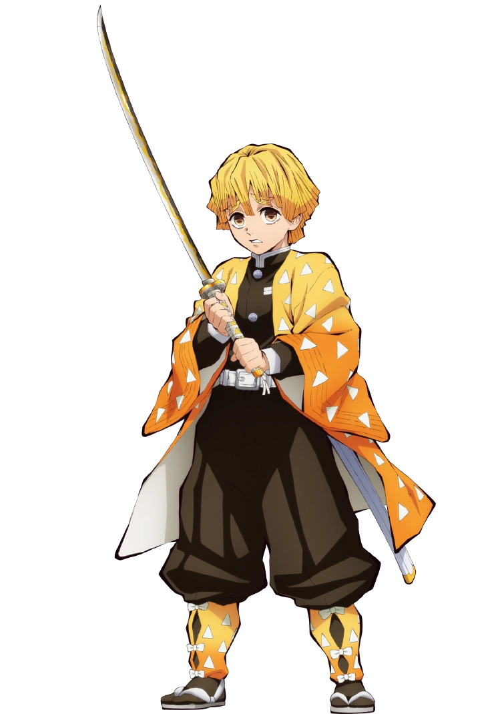
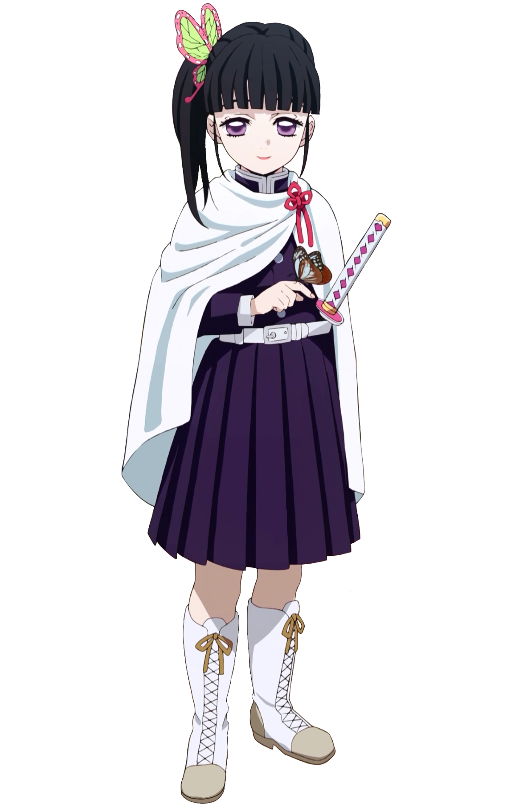

Kimetsu no Yaiba, também conhecido pelo título em língua inglesa Demon Slayer (Matador de Demônios, em português) é uma série japonesa de mangá shōnen escrita e ilustrada por Koyoharu Gotōge. O mangá é serializado desde 15 de fevereiro de 2016 e foi encerrado em 18 de maio de 2020 na revista semanal Weekly Shōnen Jump, com seus capítulos sendo reunidos em 23 volumes tankōbon pela editora Shueisha. Uma adaptação de um mangá para um anime de 26 episódios, produzida pelo estúdio ufotable, teve sua 1ª temporada exibida entre 6 de abril e 28 de setembro de 2019, e 2ª temporada, entre 10 de outubro de 2021 e 13 de fevereiro de 2022.
Em setembro de 2019, foi divulgado que todos os volumes juntos da série já tinham excedido mais de 10 milhões de cópias vendidas. Em dezembro de 2019, o mangá já contava com mais de 25 milhões de cópias em circulação.
Ambientada no Japão durante o Período Taishō (1912-1926), a história gira em torno de Tanjirō Kamado, um garoto bondoso e inteligente que vive junto com sua mãe, Kie Kamado, e seus 5 irmãos mais novos, ganhando dinheiro vendendo carvão, assim como seu falecido pai, Tanjuro Kamado. Certo dia, ao voltar para casa após ter ido a uma cidade vender carvão, Tanjiro descobre que perdeu toda sua família durante um ataque de onis. Uma de suas irmãs, Nezuko, é a única que sobreviveu ao ataque. Nezuko então passa a ser um oni, mas ela surpreendentemente ainda demonstra sinais de emoções e pensamentos humanos. Tanjirō decide então se tornar um caçador de onis para descobrir mais sobre eles. Com a ajuda de Nezuko, Tanjiro parte em jornadas pelo Japão a fim de impedir que a mesma tragédia que afetou sua família aconteça com outras pessoas, enquanto ele busca uma maneira de tornar Nezuko humana novamente.
Tanjirō é o filho mais velho de um vendedor de carvão. Sua família inteira foi massacrada por um demônio enquanto ele vendia carvão numa cidade, com apenas sua irmã Nezuko sobrevivendo, porém se transformando em oni. Seu objetivo é encontrar uma cura para ela e transformá-la de volta em um humana, e é para esse fim que ele decide se juntar à Ki-satsutai.
Inicialmente, Tanjirō treinou por cerca de dois anos com Urokodaki, aprendendo o estilo de batalha "Respiração da Água", e a aprimorando desde então. Posteriormente, Tanjirō começa a utilizar uma técnica ancestral de sua família, a Hinokami Kagura, como uma forma mais poderosa de batalha, mas depois a fundiu com as técnicas de Respiração Aquática para criar um estilo de batalha mais eficiente. Seu crânio é extremamente duro, o que o permite utilizar sua cabeça para golpear oponentes. Tanjirō ainda possui um olfato extremamente aguçado, fazendo com que ele detecte a presença de demônios e até mesmo emoções de pessoas.
Ele é um garoto de bom coração e muitas vezes sente simpatia pelos demônios e suas vítimas. Seu otimismo sem fim e sua natureza simples geralmente fazem com que as pessoas gostem de sua companhia, mas, ao mesmo tempo, também o coloca em desacordo com outras pessoas. Tanjirō utiliza uma katana solar de cor preta.
Nezuko Kamado
foto de Nezuko Kamado
Nezuko é a irmã mais nova de Tanjirō. Ela estava com seus familiares quando foram atacados e mortos por um demônio. Só ela sobreviveu, mas o ataque a deixou transformada em um demônio também. No entanto, ao contrário dos outros demônios, Nezuko conseguiu manter de alguma forma a sua consciência anterior, o que lhe permitiu reconhecer Tanjirō como seu irmão e não machucá-lo. Uma técnica de hipnose de Urokodaki fez com que Nezuko passasse a ver todos os humanos como seus familiares, o que a ajudou a se tornar um demônio que não consome carne humana. Como alternativa a não comer carne humana, Nezuko se recupera de seus ferimentos através do sono.
Ela é incapaz de falar como um demônio, sendo obrigada a utilizar uma mordaça de bambu como precaução para não morder alguém. Assim como outros demônios, Nezuko é capaz de se regenerar, atacar com força sobre-humana e aumentar ou diminuir rapidamente o tamanho de seu corpo. Tanjirō geralmente a carrega em suas costas dentro de uma caixa de madeira feita por Urokodaki, pois a luz do sol certamente iria incinerá-la.
Zenitsu Agatsuma

foto de Zenitsu Agatsuma
Zenitsu é um garoto covarde e medroso que se juntou ao Ki-satsutai na mesma época que Tanjirō. Ele treinou e se especializou no estilo de batalha "Respiração do Trovão" através do seu avô, um hashira do trovão veterano; contudo, Zenitsu só foi capaz de aprender a primeira técnica (a Respiração do Trovão possui 6 técnicas) e, por causa disso, muitas vezes ele menospreza a si mesmo, apesar do fato de que ele é talentoso, pois sempre procurou aperfeiçoar ao máximo a primeira técnica. Zenitsu possui também uma excelente audição.
Ele se une a Tanjirō em uma missão e, desde então, ele passa a acompanhá-lo, em parte porque acha Nezuko bonita. Sua personalidade covarde inicialmente o atrapalha, e ele só é capaz de lutar quando está em situações de risco excepcionais; contudo, mais tarde ele aprende a afastar seus medos e agir quando necessário. Zenitsu utiliza uma katana solar de cor dourada.
Inosuke Hashibira
foto de Inosuke Hashibira
Um jovem garoto que foi criado por um javali selvagem, Inosuke utiliza um estilo autodidata chamado "Respiração das Feras", juntamente com duas espadas serrilhadas em batalha. Quando ele recebe novas espadas, ele propositadamente as tornam serrilhadas, a fim de combinar com sua preferência e estilo de luta. Ele é impetuoso e propenso a reagir violentamente e, embora pareça sombrio, provou-se um caçador hábil em batalhas repetidas vezes. Ele é extremamente musculoso e robusto, o que contrasta com o seu rosto estranhamente afeminado, que ele normalmente esconde sob a cabeça de um javali empalhado. Quando ele conhece Tanjirō, ele o trata como um inimigo por sua determinação em proteger Nezuko, um demônio; todavia, os dois rapidamente se tornam amigos e passam a batalharem juntos. Ele costuma desafiar Tanjirō para competições aceitas de bom humor. Ele fez o teste de admissão para o Ki-satsutai ao mesmo tempo que Tanjirō e Zenitsu e aparentemente foi o primeiro a concluí-lo. Suas katanas são cinza-violeta e ele utiliza seu apurado senso de tato para detectar inimigos à longas distâncias.
Genya Shinazugawa
foto do Genya Shinazugawa
Genya é um garoto que participou do teste de aceitação para o Ki-satsutai junto com Tanjirō, Zenitsu, Inosuke e Kanao. Mostrando uma personalidade impaciente e grosseira. Vindo de uma família conturbada, Genya vivia com seus 6 irmãos, uma mãe que se esforçava muito pelo melhor da família e um pai violento, seu pai acabou morrendo pelos moradores de onde eles viviam e ele e seu irmão Sanemi tomam a responsabilidade de cuidar da família.
Em um certo dia a mãe de Genya desaparece e seu irmão Sanemi resolve sair para procurá-la, enquanto Genya permanecia com seus irmãos em casa, algum tempo depois uma batida na porta é ouvida e um dos irmãos vai abri-la e assim que a porta é aberta a criança é cortada e todos ficam feridos pela criatura. Sanemi aparece para salvar Genya e derrota a criatura que era sua mãe, com esse choque Genya chama seu irmão de assassino e anos depois ele se junta ao Ki-satsutai para reatar a conexão com seu irmão.
Kanao Tsuyuri

foto de Kanao Tsuyuri
Kanao é uma garota que realizou o teste de admissão para o Ki-satsutai junto com Tanjirō, Inosuke, Zenitsu e Genya. Oriunda de uma família que vivia em situação de miséria, Kanao sofria agressões físicas de seu próprio pai, que a vende como escrava para um desconhecido. Após ser resgatada por Shinobu e Kanae, Kanao se torna uma "tsuguko" da hashira do inseto, Shinobu, que a treina para sucedê-la. Em batalha, Kanao é uma espadachim altamente habilidosa e ágil, possuindo também um grande senso de visão.
Todavia, devido a sua infância violenta, Kanao passou a não demonstrar emoções e a não conversar como uma forma de amenizar a dor dos maus-tratos. Ela ainda possui dificuldade em realizar ações sem ser informada diretamente sobre o que fazer, motivo pelo qual Kanae lhe deu uma moeda, para ela realizar "cara ou coroa" sempre que for incapaz de tomar decisões. Após conhecer Tanjirō, este a incentiva a tomar decisões por ela mesma e a utilizar a moeda com menos frequência. Kanao utiliza uma katana solar de cor rosa.
O mangá começou a ser serializado na 11ª edição de 2016 da revista Weekly Shonen Jump, publicada em 15 de fevereiro de 2016. O primeiro volume tankōbon da série, compilando os primeiros sete capítulos, foi publicado em 3 de junho de 2016. A partir de janeiro de 2019, a editora Shueisha começou a publicar simultaneamente a série em inglês através de sua plataforma digital Manga Plus.
Durante a Comic Con Expreience 2019, em São Paulo, a editora Panini anunciou a publicação do manga para o Brasil. A Panini também está lançando boxes completos de Kimetsu no Yaiba. O box de conta com toda a série, do volume 1 ao volume 23.
Anime
Uma adaptação da série para um anime de 26 episódios, produzida pelo estúdio Ufotable, foi anunciada através da Weekly Shōnen Jump em 4 de junho de 2018. A série estreou em 6 de abril de 2019 nos canais Tokyo MX, GTV, GYT, BS11, dentre outros canais. Antes de ir ao ar, os cinco primeiros episódios do anime foram exibidos teatralmente no Japão por duas semanas, a partir de 29 de março de 2019, sob o título Kimetsu no Yaiba: Kyōdai no Kizuna.
O Arco Katanakaji no Sato-Hen recebeu uma pré-estreia em 418 cinemas no Japão.As exibições incluíram os episódios 10 e 11 do Entertainment District Arc, bem como o primeiro episódio do Swordsmith Village Arc. Também foram feitas exibições em cinemas de mais de 95 países e territórios.
O Arco da Vila dos Ferreiros estreou no dia 9 de abril, com um episódio especial de uma hora. A Crunchyroll transmitiu o anime à medida que ele foi ao ar. Após o 11º e último episódio do arco Katanakaji no Sato-Hen. O próximo arco, Hashira Geiko-Hen, teve adaptação para anime confirmado.
Filme
Em 28 de setembro de 2019, imediatamente após o final do último episódio do anime, foi publicado um pequeno teaser anunciando um filme intitulado Kimetsu no Yaiba: Mugen Ressha-hen. A animação continuou a história original do mangá a partir do arco "Trem do Infinito", e estreou no Japão em 16 de outubro de 2020 arrecadando mais de 2.3 bilhões de Ienes dois dias depois de sua estreia, em novembro tornou-se o quinto nas maiores bilheterias do japão. O filme foi lançado oficialmente no Brasil em 13 de maio de 2021.
Já com 73 dias desde a sua estreia, o filme vendeu pouco mais de 24 milhões de bilhetes, auferindo mais de 32,4 bilhões de ienes. Isso significa que o Mugen Ressha-hen alcançou o recorde de filme mais lucrativo da bilheteira japonesa, ultrapassando o longa-metragem do Studio Ghibli, A Viagem de Chihiro, de 2001, que alcançou a marca de 30,8 bilhões de ienes.
A série ficou na 14º posição na lista dos mangás recomendadas pelas livrarias japonesas em 2017, e na 19ª posição na lista dos melhores mangás de 2018 para leitores do sexo masculino reunidos pelo Kono Manga ga Sugoi!. Em fevereiro de 2019, a série tinha aproximadamente 3,5 milhões de cópias impressas em todo o mundo; em maio de 2019, cerca de 6 milhões; em setembro, mais de 10 milhões.
Durante a exibição do 19º episódio do anime, em 10 de agosto de 2019, a série começou a ser um assunto de tendência mundial no Twitter, devido a recepção positiva do episódio por parte de milhares de usuários da plataforma.